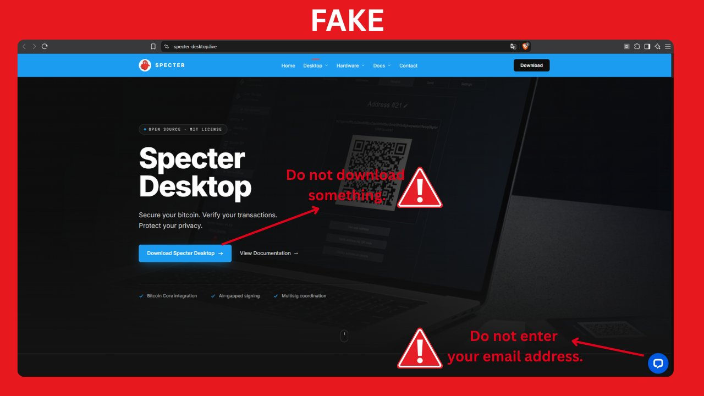
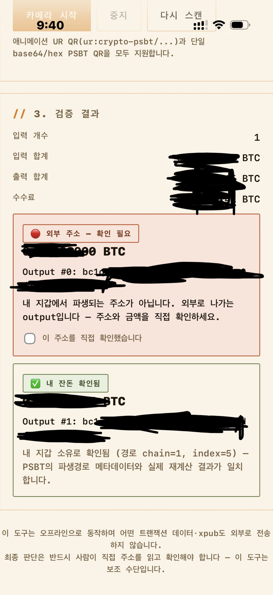

느긋하게 커피 마시다가 X(트위터)에서 @SpecterWallet 공식 계정이 "가짜 피싱 툴 유포 중이니 조심하라"는 경고를 올린 걸 봤다.
순간 커피 맛이 싹 사라졌다. 어? 내가 지금 쓰고 있는 스팩터... 설마 그거 아니겠지?

1. 일단 내 스팩터부터 정밀 검사
불안한 마음을 안고 바로 검증에 들어갔다. 공식 GitHub 저장소에서 최신 릴리즈 설치파일을 새로 받고, 체크섬(SHA256)을 공식 배포본과 대조했다 — 정확히 일치.
여기서 끝내면 아쉽지. GPG 서명까지 확인했다. 서명 검증용 공개키는 GitHub과는 아예 다른 경로(키서버)에서 따로 받아왔다. 한쪽이 해킹당해도 다른 쪽까지 같이 뚫릴 확률은 훨씬 낮아지니까. 결과는 "정상 서명" — 통과.
이렇게 검증까지 마친 파일로 기존 설치 위에 재설치까지 싹 밀어버렸다.
결론: 원래 쓰던 스팩터도 정품이었고, 이번 재설치로 100% 검증된 상태로 새로 갈아 끼웠다. 심장 철렁했던 게 무색하게 그냥 해프닝이었다.
2. 안심하려는데 또 다른 놈이 튀어나왔다
휴, 다행이다 하고 다른 기기에서 테스트 트랜잭션 하나를 날렸는데 — 이 녀석이 20분이 넘도록 스팩터 화면에 코빼기도 안 비쳤다. 또 뭐지 싶어서 mempool.space에 가서 해당 txid를 직접 조회해봤다.
비트코인 네트워크 전체 멤풀엔 멀쩡히 들어가 있었다. 수수료도 그날 최저 수수료 수준(약 1 sat/vB)이라 딱히 이상한 것도 없었다. 그럼 왜 내 스팩터만 못 보는 거지?
범인은 비트코인 코어 노드였다. 상태를 보니 "Node uptime: ~0 Hours" — 얼마 전에 노드가 재시작되면서 멤풀이 통째로 초기화된 상태였던 거다. 재시작 이전에 이미 방송된 이 트랜잭션을, 노드가 아직 피어들로부터 다시 전달받지 못한 것뿐이었다. 연결된 피어도 13개로 정상, 동기화 상태도 멀쩡했으니 순전히 타이밍 문제였다.
별다른 조치 없이 그냥 좀 더 기다렸더니, 노드가 알아서 트랜잭션을 재수신했고 코어와 스팩터 양쪽 다 잔액에 정상 반영됐다.
3. 덤으로, 코어에서 스팩터 지갑 보는 법
스팩터는 지갑을 만들 때 비트코인 코어에 watch-only 디스크립터 지갑을 알아서 만들어 xpub 기반 정보를 이미 넣어둔다. 그래서 코어 쪽에 xpub을 따로 손으로 입력할 필요가 없다.
코어 Qt의 "지갑 열기" 메뉴에서 이름이 회색으로 비활성화되어 보이는 항목이 있다면, 그건 이미 열려서 쓰이고 있는 지갑이라는 뜻이니 정상이다. 지갑을 바꿔가며 보고 싶으면 File 메뉴가 아니라 툴바에 있는 "지갑:" 드롭다운에서 고르면 된다. 전환하고 나면 코어 GUI에서도 스팩터랑 똑같은 잔액과 내역을 볼 수 있다.
결과적으로 오늘 겪은 일들은 다 정상적인 소프트웨어 동작 범위 안이었고, 보안·정품 쪽으로도 아무 이상 없었다.
ps. 트랜잭션 만드는 김에 예전에 만들어둔 PSBT 잔돈(OUTPUT) 검증기도 오랜만에 다시 돌려봤는데, 오류 하나 없이 깔끔하게 검증을 통과했다. 내 손으로 만든 도구가 내 트랜잭션을 지켜주는 기분, 이거 은근히 짜릿하다.
